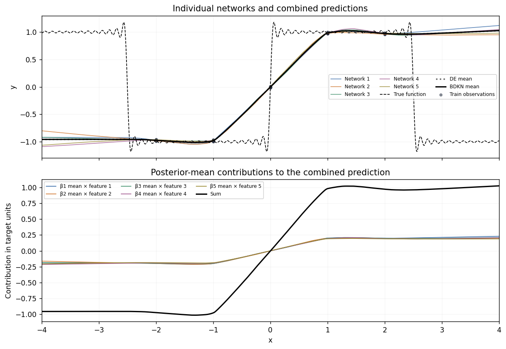
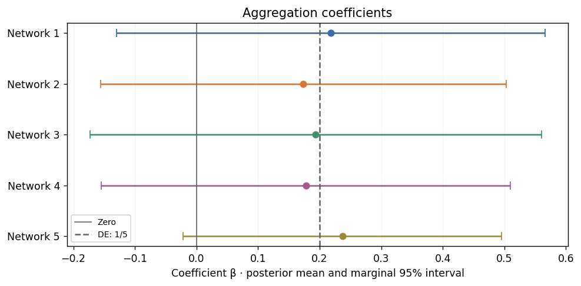
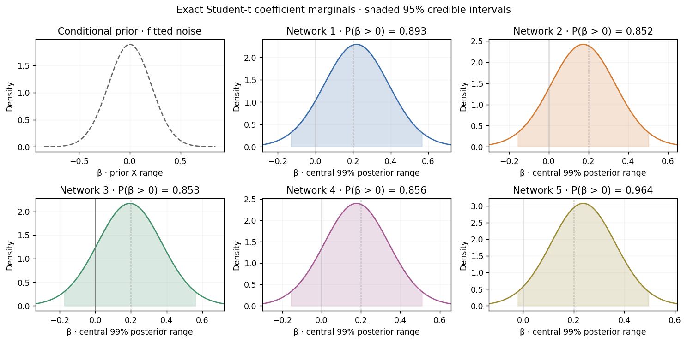
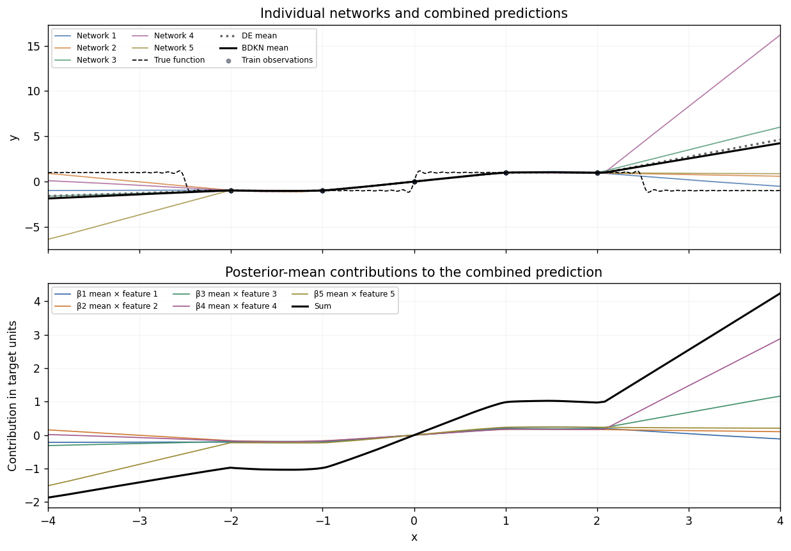
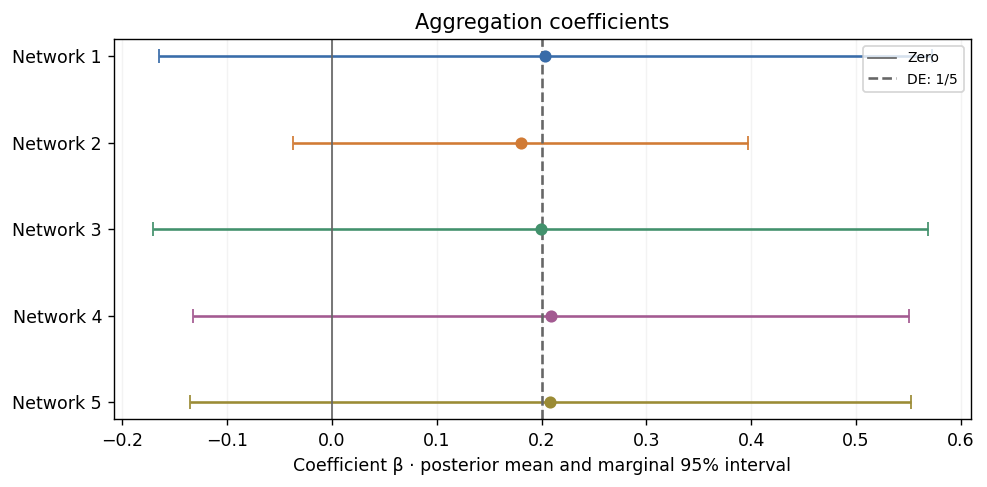
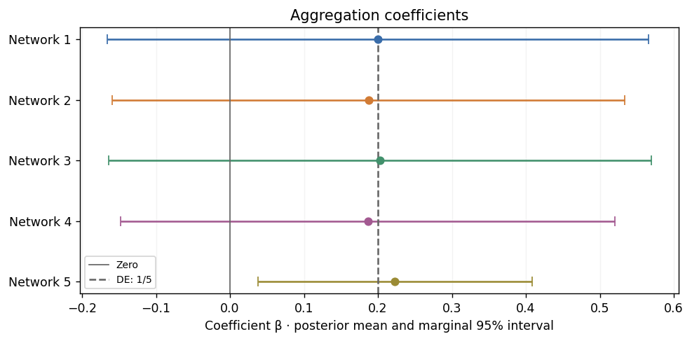
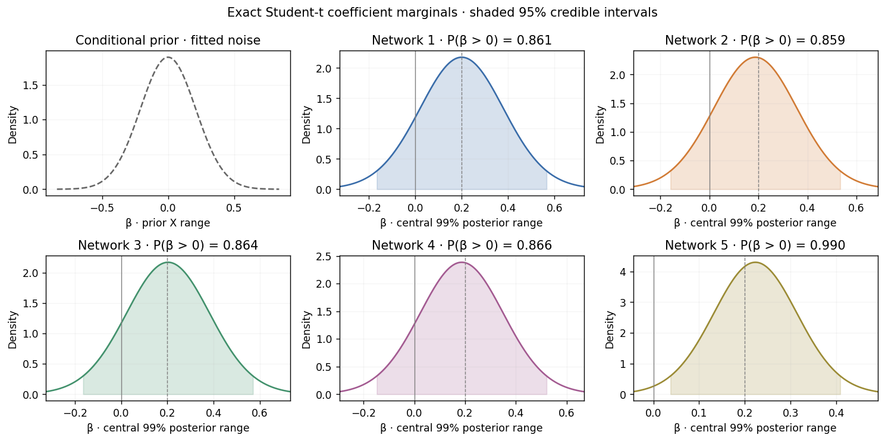
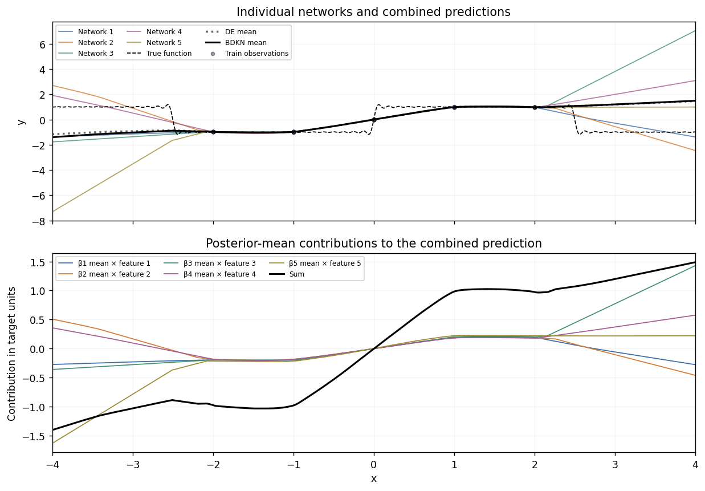

Regression comparison
Download resultsAggregation weights
Coefficients can be negative and need not sum to one. Intervals describe coefficient uncertainty; the dashed reference is DE’s fixed 1/H weight.
BDKN



Each density panel uses its own X range for readability; coefficient intervals above share a common axis. Prior reference conditions on fitted noise. Contribution shares use held-out inputs; test targets are used only for scoring.
| Network | β mean | 95% low | 95% high | P(β > 0) | Contribution share | Test RMSE | Test NLL |
|---|---|---|---|---|---|---|---|
| 1 | 0.20499 | -0.16142 | 0.57139 | 0.86674 | 0.20629 | 1.24833 | 58883.42623 |
| 2 | 0.20321 | -0.04378 | 0.45019 | 0.94766 | 0.19829 | 1.19777 | 13842.83477 |
| 3 | 0.20250 | -0.16348 | 0.56849 | 0.86413 | 0.20069 | 1.22938 | 56464.58887 |
| 4 | 0.19702 | -0.15856 | 0.55260 | 0.86446 | 0.20055 | 1.25845 | 42876.21222 |
| 5 | 0.19261 | -0.07921 | 0.46443 | 0.91957 | 0.19419 | 1.24253 | 34739.66116 |
Functional repulsion · BDKN



Each density panel uses its own X range for readability; coefficient intervals above share a common axis. Prior reference conditions on fitted noise. Contribution shares use held-out inputs; test targets are used only for scoring.
| Network | β mean | 95% low | 95% high | P(β > 0) | Contribution share | Test RMSE | Test NLL |
|---|---|---|---|---|---|---|---|
| 1 | 0.21845 | -0.12965 | 0.56656 | 0.89332 | 0.11007 | 0.98400 | 11836.70921 |
| 2 | 0.17335 | -0.15608 | 0.50278 | 0.85219 | 0.08711 | 0.90742 | 6436.12218 |
| 3 | 0.19362 | -0.17292 | 0.56017 | 0.85311 | 0.21948 | 2.55180 | 1125740.01266 |
| 4 | 0.17771 | -0.15462 | 0.51004 | 0.85602 | 0.33724 | 5.25566 | 1589946.28959 |
| 5 | 0.23716 | -0.02158 | 0.49590 | 0.96423 | 0.24610 | 2.43666 | 484418.78936 |
Weight repulsion · BDKN



Each density panel uses its own X range for readability; coefficient intervals above share a common axis. Prior reference conditions on fitted noise. Contribution shares use held-out inputs; test targets are used only for scoring.
| Network | β mean | 95% low | 95% high | P(β > 0) | Contribution share | Test RMSE | Test NLL |
|---|---|---|---|---|---|---|---|
| 1 | 0.20365 | -0.16494 | 0.57225 | 0.86379 | 0.52258 | 14.49853 | 50651177.39571 |
| 2 | 0.18007 | -0.03710 | 0.39723 | 0.94896 | 0.17321 | 2.96541 | 864501.73840 |
| 3 | 0.19920 | -0.17067 | 0.56906 | 0.85772 | 0.13039 | 1.59089 | 591529.90075 |
| 4 | 0.20927 | -0.13240 | 0.55094 | 0.88782 | 0.09436 | 1.18078 | 57240.53990 |
| 5 | 0.20841 | -0.13540 | 0.55222 | 0.88544 | 0.07945 | 1.35203 | 353581.91384 |
First-order repulsion · BDKN



Each density panel uses its own X range for readability; coefficient intervals above share a common axis. Prior reference conditions on fitted noise. Contribution shares use held-out inputs; test targets are used only for scoring.
| Network | β mean | 95% low | 95% high | P(β > 0) | Contribution share | Test RMSE | Test NLL |
|---|---|---|---|---|---|---|---|
| 1 | 0.20006 | -0.16585 | 0.56598 | 0.86131 | 0.13210 | 0.99566 | 20971.36437 |
| 2 | 0.18730 | -0.15907 | 0.53366 | 0.85868 | 0.14229 | 0.60408 | 2918.91945 |
| 3 | 0.20285 | -0.16413 | 0.56982 | 0.86389 | 0.28358 | 2.77861 | 872713.53741 |
| 4 | 0.18650 | -0.14770 | 0.52070 | 0.86615 | 0.17010 | 1.52807 | 186528.29328 |
| 5 | 0.22303 | 0.03750 | 0.40857 | 0.99027 | 0.27193 | 2.53792 | 840553.97897 |